简介
LemmaLoom 是一款质性数据分析应用，同时也能识别语法。你可以像在其他任何质性数据分析类应用中那样为段落编码；不同的是，在 LemmaLoom 中，你还可以对照整个文档所用的语法来考察这些编码实例。假设你为暗含“不确定性”的段落编了码，接下来就可以在文档中查询这些编码实例里出现的某些语法模式，例如模糊限制语和情态动词的用法。
LemmaLoom 是什么
LemmaLoom 可以处理任何类型的文本。无论你手头是论文、评论文章、新闻报道、调查问卷、访谈还是文学作品，LemmaLoom 都能读入。不过，支持的格式只有几种。可以导入的有纯文本文件、PDF、网络文章（通过 URL）以及音频和视频文件。音频和视频文件还会由语音转文字模型转写成文本；此外，说话人分离模型会自动为转写文本中的不同说话人编码。
主窗口
主窗口分为三栏。第 2 章“开始使用”中的认识主窗口一节详细介绍了窗口中的每个部分。
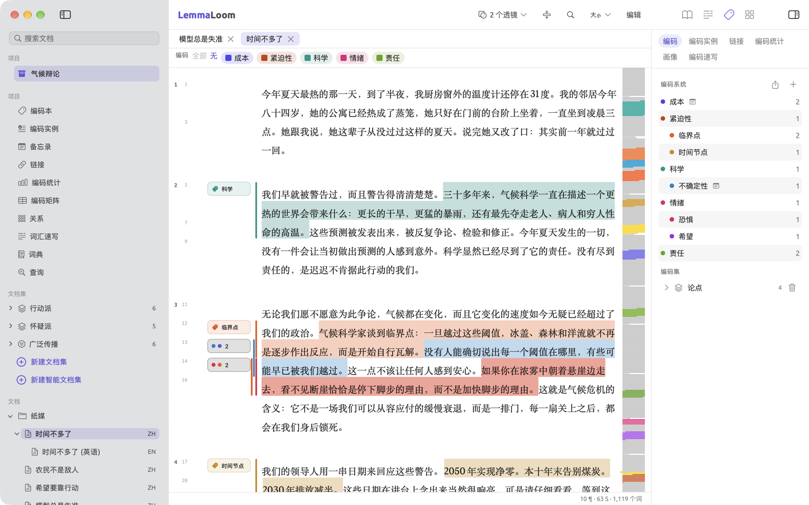
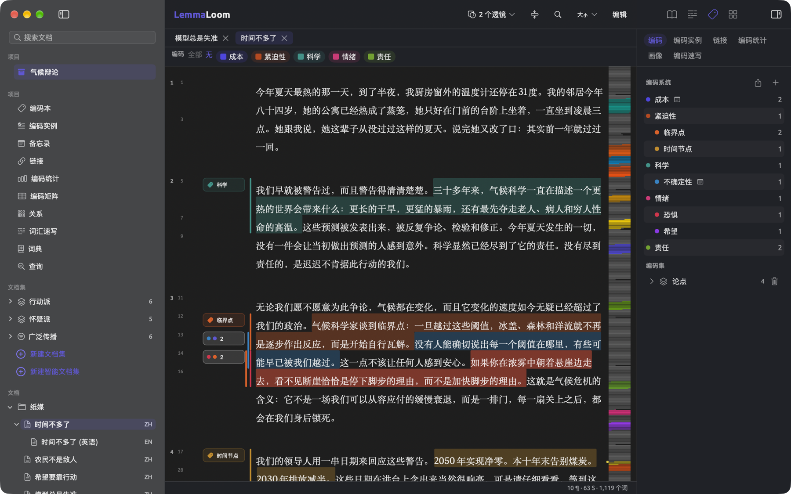
LemmaLoom 左侧的导航栏列出你的所有项目。导航栏中项目下面是当前项目的项目视图栏，全部十个视图都在这里，其中包括编码本、编码矩阵和查询。每个视图都在阅读器的一个标签页中打开。视图栏下方是项目的文档集、分组、文档，以及这些文档的标签。
阅读器位于主窗口的中间。每个文档和每个视图都有自己的标签页。阅读器顶部横贯着标题栏，上面有透镜菜单，以及用于查找文本、更改字体和文字大小的按钮。标题栏的右侧是编辑，用于把阅读器切换到编辑模式。在阅读器中选中文本后，阅读器底部会弹出选区栏。你可以在这里点按书签、编码、备忘录和链接；如果项目使用了词典，添加到词典也在这里。
LemmaLoom 右侧是检查器，其中包含与当前标签页中的文档有关的一切。它有四个标签页：文本、语法、编码和多重模式，其中多重模式包含速写空间和针对该文档的查询构建器。也可以通过显示 ▸ 检查器（⌥⌘1 至 ⌥⌘4）切换到这些标签页。每个标签页又分为若干部分，称为分面；标签页顶部的一排按钮用来切换你正在查看的分面。
工作类型
如果本章中有你不熟悉的术语，可以跳到基本术语一节查看。
质性编码
编码是指给段落加上称为编码的标签，凡是与某个编码相关的段落，都可以加上这个编码。编码可以涉及主题、情感或技术，也可以是一个问题，你想让它是什么都可以。编码通常是为了帮助你回答关于原始材料的具体问题而设计的，所以不妨从你的问题出发，找出文本的哪些方面可能有助于你以质性或量化的方式回答这些问题。随应用附带的示例项目“气候辩论”中有“紧迫性”“科学”和“情绪”等编码；你可以看到这些编码如何应用于项目中的各个文档，以及它们如何帮助回答这些文档在呈现气候信息上有何不同。通常，你会在项目的编码本中建立编码（在导航栏中点按项目下的编码本），然后在通读文本时应用它们；不过，编码也可以在阅读过程中随手创建，也就是 in vivo 编码。要为一个段落编码，请在阅读器中选中它，然后点按底部选区栏中的编码。你可以从编码本中选一个编码，也可以像上面说的那样新建一个编码。
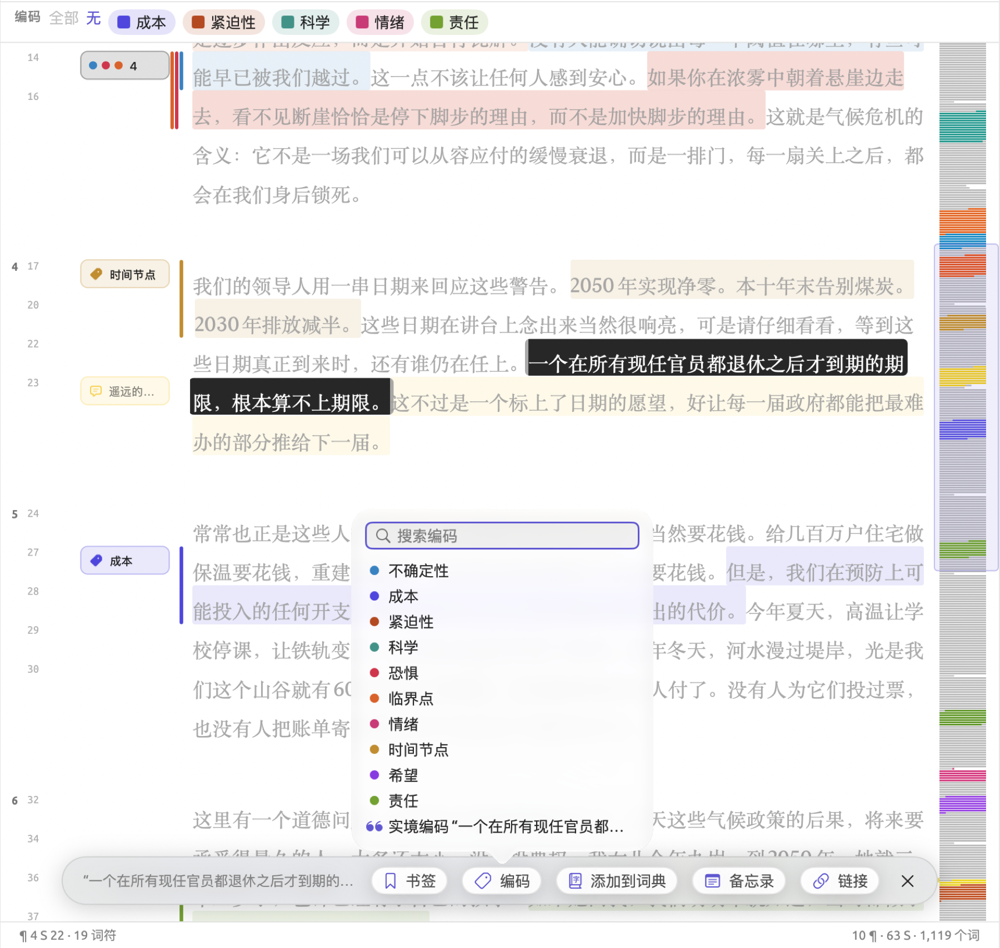
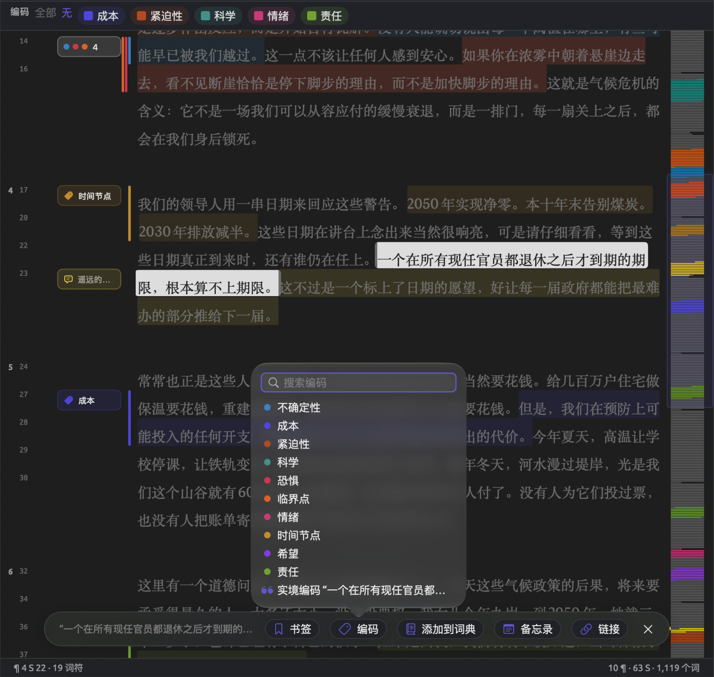
备忘录、链接和书签与编码相似，添加方式也相同，但各有不同的用途。本章后文的编码与编码实例分别介绍了它们，并说明何时该选用哪一种。LemmaLoom 还可以借助本指南后文介绍的其他一些工具，替你自动为段落编码（自动编码…）；词典、查询和分析器等工具都可以用来自动为文本中的特定模式编码。
项目和文档集都有三张编码实例报表。编码统计列出每个编码出现的次数；编码矩阵以交互方式把编码与文档或某个属性的特定值交叉对照；关系以交互视图显示哪些编码一同出现在相同的文本段落中。打开任一文档的检查器编码标签页，可以看到同类信息，但只针对当前文档，另外还有画像，显示每个编码落在文本中的什么位置。
凡是支持 REFI-QDA 标准（用于交换质性数据分析项目的标准）的软件，都可以与 LemmaLoom 交换项目。要把这样的项目导入 LemmaLoom，请选取文件 ▸ 导入 ▸ REFI-QDA 项目；要把项目从 LemmaLoom 导出到其他应用，请选取文件 ▸ 导出 ▸ REFI-QDA 项目。单独的编码本也可以用同样的方式交换，使用这两个菜单中的 REFI-QDA 编码本即可。要把整个项目移到另一台 Mac 上，请用文件 ▸ 导出 ▸ LemmaLoom 项目导出；项目中的一切都会随之导出，包括索引和媒体文件。要在另一台 Mac 上恢复导出的项目归档，请使用文件 ▸ 导入 ▸ LemmaLoom 归档。两种交换方式的详细说明见第 22 章“交换与导出”。
语言分析
导入英语、德语或中文文档时，LemmaLoom 会为它们建立索引。建立索引时，LemmaLoom 会确定文本中每个词的词典形式和词性，识别各个词在句子中起什么作用，以及一个词与同一句中其他词的关系。这些信息被“索引”到数据库中，供 LemmaLoom 其余的语法工具以及查询、分析器等功能使用。LemmaLoom 默认会对已建立索引的数据进行一些内置分析，你可以通过透镜或语法检查器把结果直观地呈现出来（见第 6 章“透镜”、第 11 章“语法检查器”）；其中包括衔接、元话语和修辞方面的分析结果（本章后文的分析工具解释了这些术语）。
在阅读器中，透镜会为文本设置样式，帮助你辨认并直观地看到透镜所关注的内容出现在文档的哪些位置。例如，词类透镜按每个词所属的类别（词性）为文档中的所有词着色。有许多内置透镜可供使用，帮助你找出文本中特定的语法模式、形式或功能。你也可以借助查询和分析器开发自己的透镜（见第 18 章“使用查询结果”、第 20 章“自定义分析器”）。另一个帮助你从文本中提取语法信息的地方是检查器（阅读器右侧的面板）。检查器的各个标签页对文档进行不同类型的分析，帮助你理解文档的内容，以及这些内容在语法上起什么作用。
词汇速写针对一个词，按语法关系把与它一起出现的所有词分类整理。以气候为主语的动词、修饰夏天的形容词就是这样的例子。
查询是针对文档提出的、可以度量的问题。你可以构建查询来查找特定的词、短语或模式，考察这些内容与编码实例之间的关系，或者获取文本的总体统计数据。一个查询可以涵盖单个文档、一个文档集或整个项目。查询甚至可以跨项目做一些分析，不过这方面的功能较为有限。你提出的问题属于哪种类型，决定了结果以什么形式呈现。例如，如果你的查询只是“找出所有使用了情态动词的短语”，你会得到所有这些短语的列表；如果查询是“统计所有使用了情态动词的短语”，输出就只是一个数值。输出类型不同，你在 LemmaLoom 中能对结果做的事情也不同（见第 16 章“查询结果与统计”和第 18 章“使用查询结果”）。
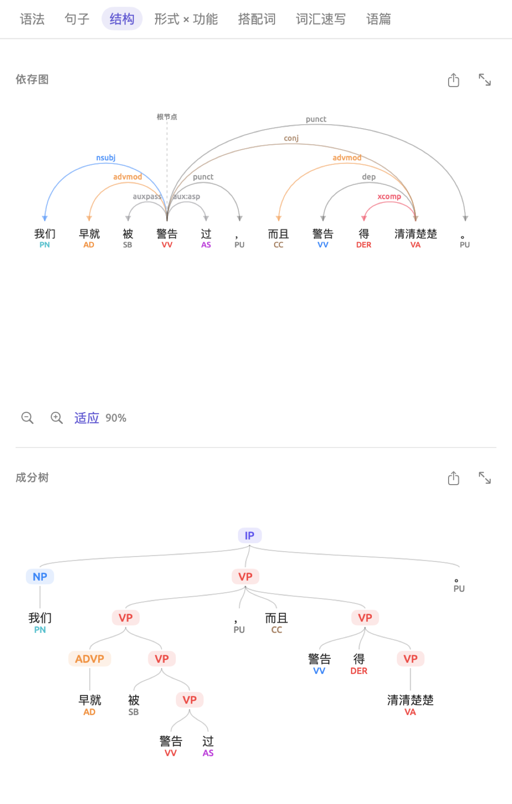
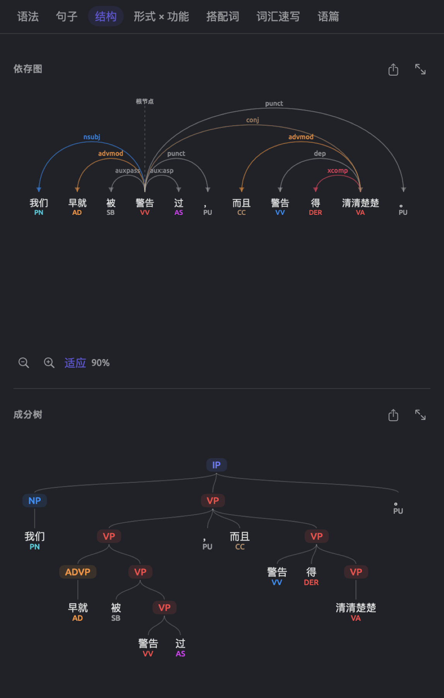
混合方法
编码、属性和语法分析都在同一个项目中。一个问题或一个查询可以涉及项目中这些方面的任何内容。以“气候辩论”的编码矩阵为例，按属性“立场”对列分组后，它会显示每个编码在行动派的文本、怀疑派的文本和中立来源中各应用了多少次。在这里，你可以把编码实例和属性结合起来，直观地看到不同编码在另一个方面（如某个属性值）上的应用情况。
查询可以统计语料中与词典词条匹配的次数，并按其他某个筛选条件（如属性）比较这些匹配出现的频率。以“气候辩论”项目为例，一个查询可以借助词典“模糊限制语”，考察属性值为“行动派”或“怀疑派”的文档中每 10,000 词各有多少处匹配。这类查询得出的是比率。在这个例子里，比率就是找到的模糊限制语数量除以总词数，再乘以 10,000。一篇 600 词的专栏中有 6 个模糊限制语（数字取整，为便于说明而虚构），结果就是 ，即每 10,000 词 100 个模糊限制语。项目一级的查询构建器中有许多模板，可以作为不同类型查询和结果的起点。
速写空间是一种可视化工具，帮助你了解语法搭配对象在文档其他方面（如编码或属性）上的分布。例如，你可以比较在属性为行动派的文档和属性为怀疑派的文档中，分别有哪些动词以气候为主语。这有助于直观地看出某几组文档中某种现象出现的频率是否不同。要了解差异有多大，可以把查询显示为比较。
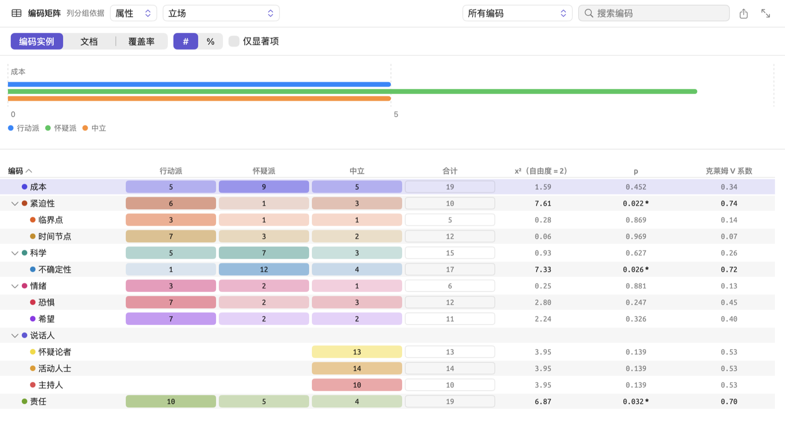
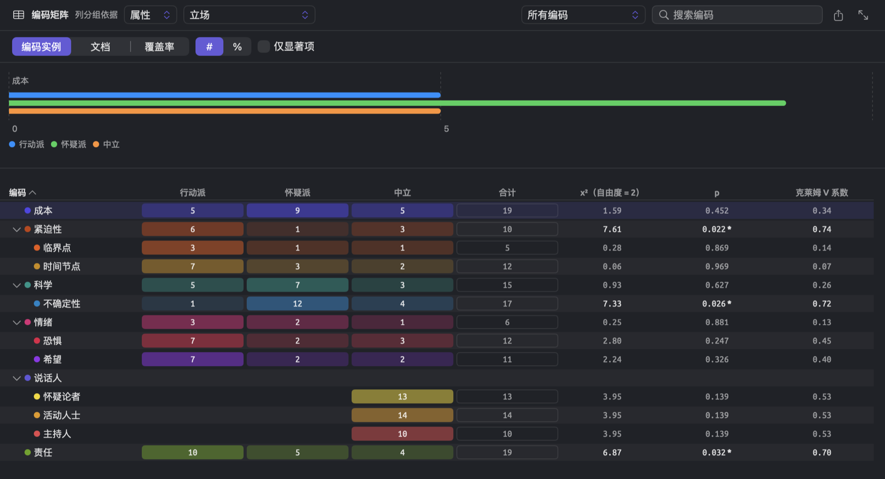
如果查询结果输出的是文档中的段落，你可以看到这些段落出自哪里，并直接跳转到这些段落。第 16 章“查询结果与统计”全面介绍了如何解读查询结果。
基本术语
通过帮助 ▸ 术语表打开的术语表收录了下面大多数术语的定义，也收录了 LemmaLoom 中使用的语法标记的定义，包括词性标记和依存关系。你可以在术语表的搜索栏中输入要查找的内容，也可以在边栏的类别列表中选择一个类别浏览。术语表可以一直开在工作窗口旁边。
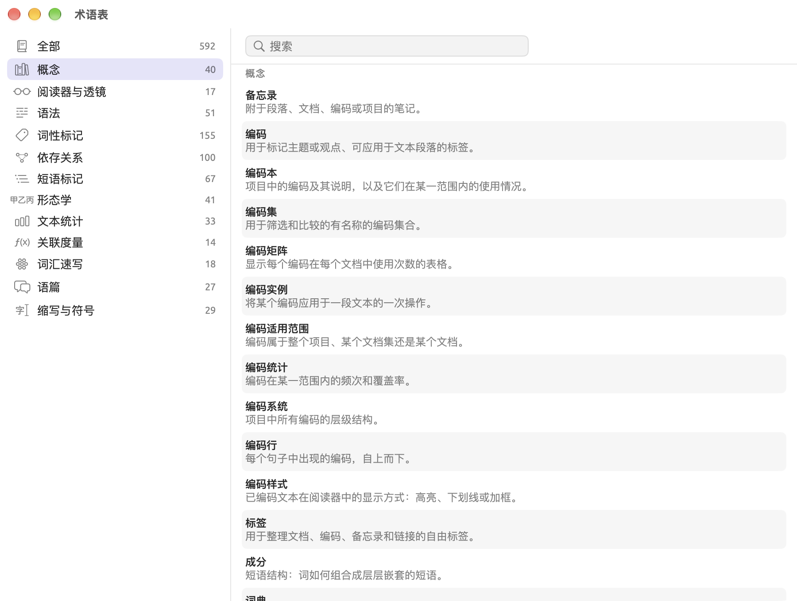
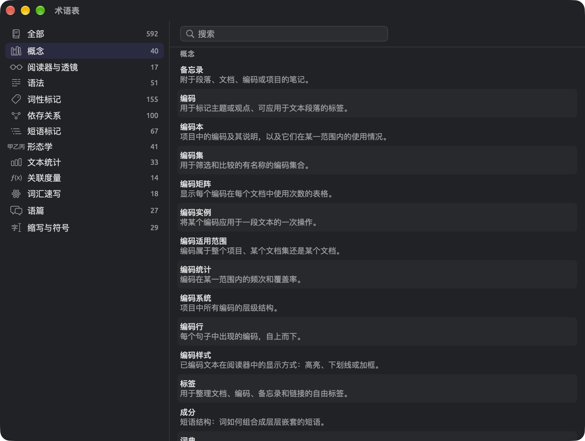
项目、文档和译文
在 LemmaLoom 中，每个项目存放一项研究，也就是这项研究的文档，以及分析这些文档所涉及的一切。你创建的所有编码实例、编码、备忘录、文档集、属性、已存储的查询和词典都属于这个项目。项目之间相互独立，只有三样东西是共用的。自定义分析器和标签在全局范围内共用，你为所有项目存储的查询也是如此。详见第 3 章“项目与文档”中的跨项目工作。
文档指项目中的单份文本。文档可能来自纯文本文件或 PDF，也可能直接取自网站或网络文章。音频和视频文件同样可以作为文档，导入时会为你转写。Word 文件需要先存储为纯文本或 PDF 再导入。详见第 4 章“导入资料”中的文本文件。每个文档都带有元数据，如名称和语言、作者、日期、出版者和 DOI；这些元数据在文档信息中编辑。要打开文档信息，请使用导航栏中该文档的快捷菜单：按住 Control 键点按文档名称，然后从菜单中选取信息。本章后文的体例约定介绍了快捷菜单。
把录音作为文档导入时，其转写文本的每一段都有一个时间戳；如果检测到不止一个声音，每一段还关联着一位说话人。“电台辩论”就是一段已转写的音频录音，有三位不同的说话人，即“主持人”“活动人士”和“怀疑论者”。
译文是文档的另一种语言版本。要生成译文，请在文档的快捷菜单中选取翻译。导航栏会把译文列在其原文下方。译文以原文的名称命名，并在括号中附上译入的语言，例如“时间不多了 (英语)”。原文和译文会（尽可能紧密地）对齐，因此你在其中一方添加的编码实例或备忘录，会出现在另一方的对应位置。链接和书签也以同样的方式同步。在文档集或项目范围内统计和搜索时，除非明确另作选择，否则只使用原文。要纳入译文，请把查询的语料设为译文或两者。对于词汇速写，请选择一种译文语言作为它的语料。第 9 章“译文与分屏浏览”更详细地介绍了译文的用法。
整理文档
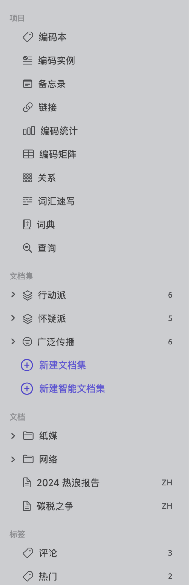
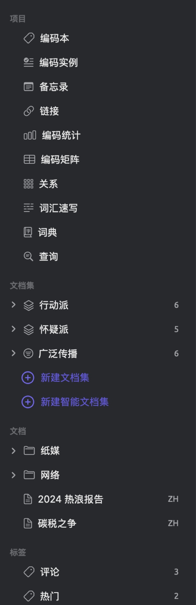
分组就像文件夹，供你整理文档。一个文档只能属于一个分组，或者不属于任何分组。与文档集不同，分组不是语义单位，主要用来整理文档列表。要分析某个分组中的文档，可以建立一个带有分组条件的智能文档集，或者改用文档集。在“气候辩论”项目中，可以看到有些文档在分组里，有些则不在。
文档集是项目中一组有名称的文档。通常，你会用文档集告诉 LemmaLoom 一项分析应该包含哪些文档。多个文档集可以相互重叠，一个文档可以同时属于多个文档集。在导航栏中点按一个文档集即可打开它；它包含与项目视图栏相同的十个视图，只是范围限于其中的文档。“气候辩论”有两个文档集：“行动派”和“怀疑派”。
智能文档集通过条件自动确定其成员。LemmaLoom 会动态跟踪各文档是否满足文档集的条件。条件可以检查属性、标签或分组。此外，条件还可以检查文档的格式、语言，或者标题、日期等元数据。例如，智能文档集“广泛传播”只有一个条件：“读者数”至少为 100,000。
标签是可以自由命名的标识，项目和文档都可以加标签。编码、链接和备忘录也可以加标签。标签可以用来筛选列表或选择文档。你的所有项目共用同一份标签列表。通过窗口 ▸ 标签可以打开标签列表，每个标签旁都显示带有该标签的条目数。标签名称不区分大小写，因此“Viral”和“viral”是同一个标签。此外，项目文档上的每个标签都相当于一个文档集，显示在导航栏的标签部分。“气候辩论”中有几个文档带有“评论”和“热门”标签。
属性记录每个文档的一项事实信息，例如文本所持的立场和发表日期。每个属性都必须有名称和类型。可用的类型有文本、整数、小数、布尔值（是或否）、日期和选择器（从固定列表中选一个值）。要为属性填写数据，可以通过项目的快捷菜单打开属性。这会打开属性窗口，其中的表格每个文档占一行，每个属性占一列。点按添加属性可以新建属性，并为所有文档填写它的值。你也可以在单个文档的文档信息中填写该文档的属性值。“气候辩论”有四个属性：
| 属性 | 类型 | 值 |
|---|---|---|
| 立场 | 选择器 | 行动派、怀疑派或中立 |
| 读者数 | 整数 | 一个整数 |
| 发表日期 | 日期 | 一个日期 |
| 媒体 | 文本 | 任意文本 |


智能文档集的条件可以检查属性。属性可以用来为编码矩阵的列分组。你还可以按属性拆分查询的输出，对不同组的结果进行比较。第 8 章“文档集、分组、标签和属性”详细介绍了标签、文档集、分组和属性。关于编码上的属性，请参阅下文的编码与编码实例。
编码与编码实例
在 LemmaLoom 中，编码是指把文档中的段落归到称为编码的主题标签下。编码可以代表文档中的任何主题、想法、问题、话题等；放在另一个编码下面的编码就成为子编码。例如，“气候辩论”中的“临界点”和“时间节点”都是“紧迫性”的子编码。编码在阅读器中的外观，由为每个编码选择的颜色和格式样式决定（格式样式有高亮、下划线和方框）。可以设置编码的描述、标签和属性，以及它的适用范围，即整个项目、单个文档集或单个文档。通常，你会在编码本（导航栏中项目下的编码本）中定义编码；这个列表显示所定义的每个编码的描述和总使用次数。要筛选或比较一部分编码，可以把它们放进编码集。“气候辩论”有一个编码集“论点”。
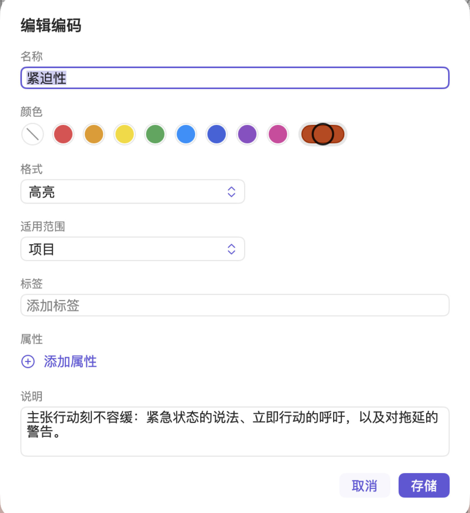
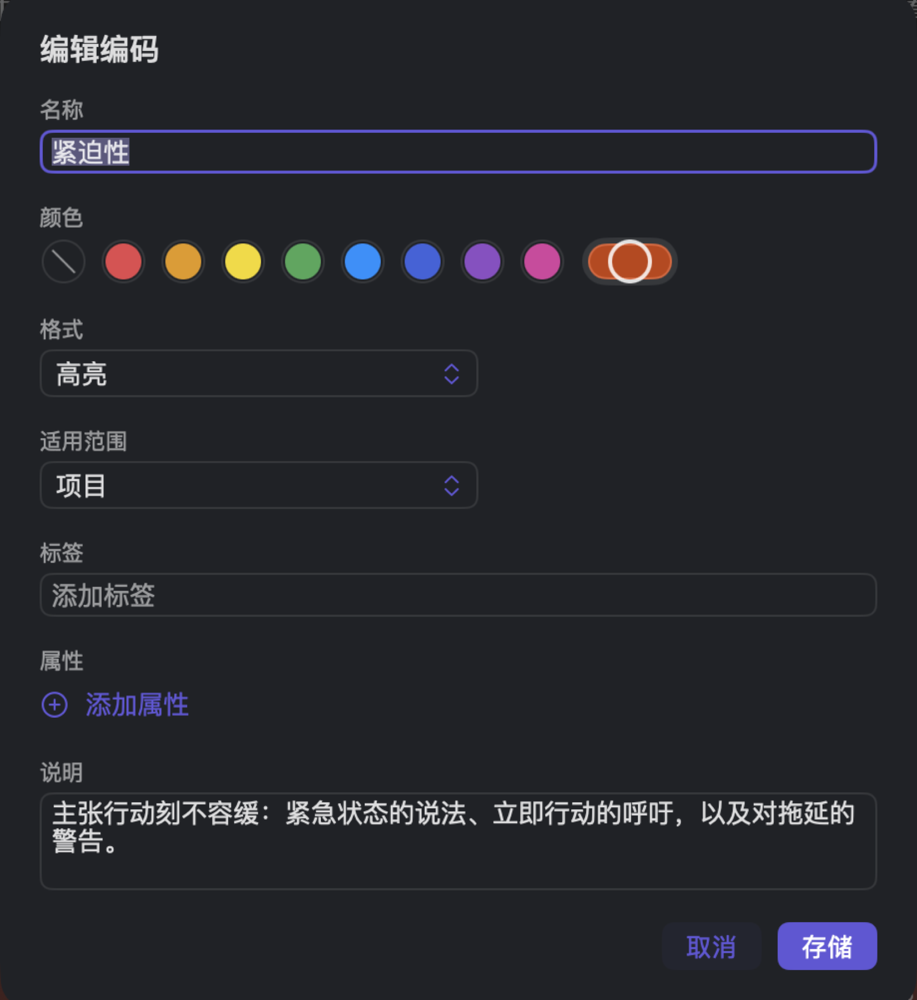
每次把一个编码赋给一个段落，就产生一个编码实例，这个段落称为该编码实例的片段，也可以叫编码片段。一个编码片段只包含一个段落和一个编码；因此，一个同时编码为“成本”和“责任”的段落算作两个独立的编码实例。编码实例可以相互重叠，也可以相互嵌套。如果编码带有属性，属性值与每个编码实例单独关联，而不是与编码关联。假设你有一个代表情绪的编码，它带有一个表示情绪强烈程度的属性；把这个编码应用到不同段落时，你会为每个编码实例分别指定一个强度等级。
备忘录、链接和书签与编码实例有许多相似之处，添加方式也相似（选中段落，然后点按选区栏中相应的按钮）；不过，它们的功能各不相同。添加备忘录可以为选中的段落写下评论。选中所需的段落，然后点按备忘录。备忘录也可以归入编码（称为已编码备忘录），并带有该编码的标签；它们还有自己的一套该编码的属性值，查询可以把它们与该编码的编码实例一起统计。创建链接可以把段落相互连接起来，无论它们在同一个文档中还是在不同文档中；这项功能帮助你记住哪些段落彼此相关（相互矛盾的段落、相互回应的段落等）。先选中一个段落并点按链接，再选中另一个段落并点按完成链接。链接从前一个段落指向后一个段落。你可以用自己的话为链接的两端指定一种关系，还可以添加评论和标签。书签只用来记下你以后想再回来看的段落；选中一个段落并点按书签，还可以为书签添加评论和颜色。加了书签的段落可以在阅读器的书签透镜和检查器的文本标签页中查看。
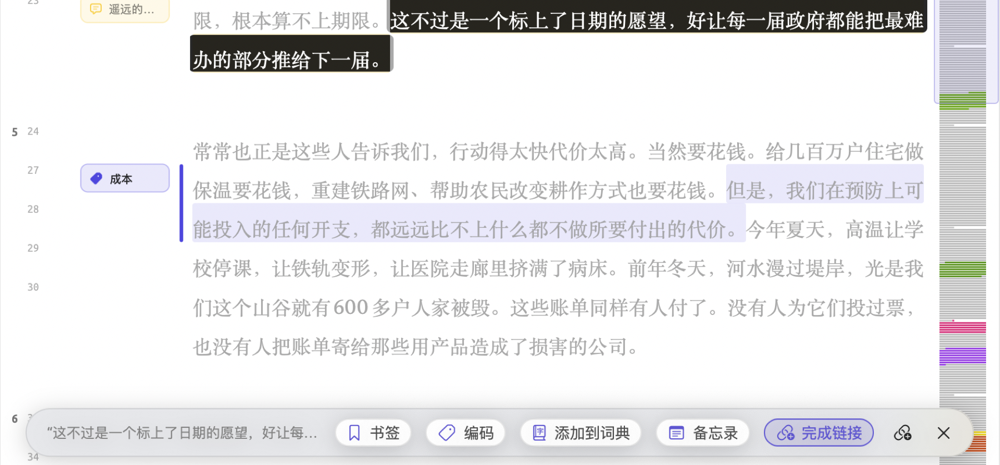

分析工具
把文档添加到项目时，LemmaLoom 会通过分析其语法为它建立索引。也就是说，文本被切分成句子和词符，词符即单个的词和标点符号。然后，LemmaLoom 为每个词确定词元、词性和语法特征。词元指每个词的词典形式；因此，ran 和 running 的词元都是 run。除了为单个词建立索引，LemmaLoom 还会记录句子中词与词之间的关系，以及它们组成的短语。大型文本和长录音可能需要较长时间来处理或转写，具体取决于你的 Mac 的计算能力。建立索引期间，导航栏中文档旁边会出现一个进度环，显示当前进度。“活动”窗口可以通过窗口 ▸ 活动（⌥⌘0）打开，其中显示所有正在进行的任务。导入文档时不一定要立即建立索引；导入时可以关闭为语法分析建立索引，之后再用文档信息中的立即建立索引选项建立索引。
透镜负责为文本设置样式或添加标注，突出显示某些类别在文档中出现的位置，无论是词类、编码还是你需要的其他内容。透镜在透镜菜单中选择，这个菜单是标题栏右端控件中的第一个。可以同时选择多个透镜。有些透镜呈现语法分析的结果，如词类、情态和否定；其他透镜，如编码和书签，则呈现你借助自己建立的工具完成的工作。第一次打开文档时，编码和书签已经启用。每个词典、每个自定义分析器以及每个存储为透镜的查询，都会作为一个独立的透镜添加到透镜菜单中。如果文档尚未建立索引，透镜菜单会保持停用状态。
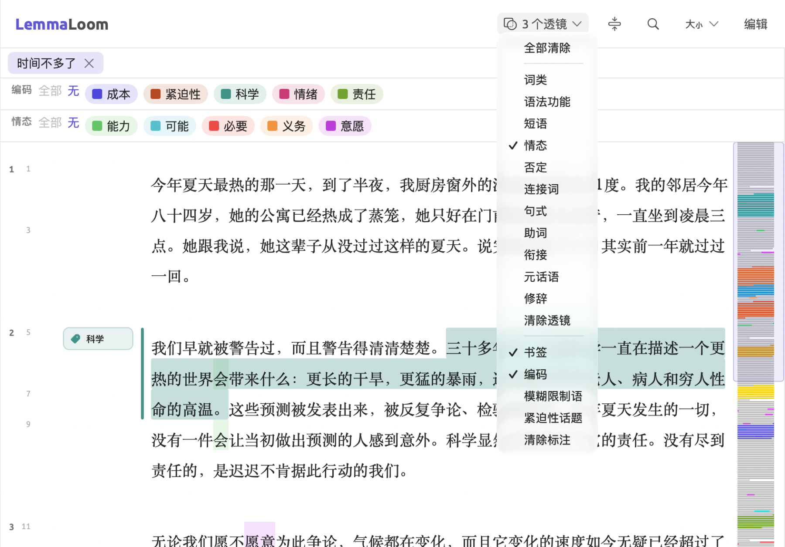
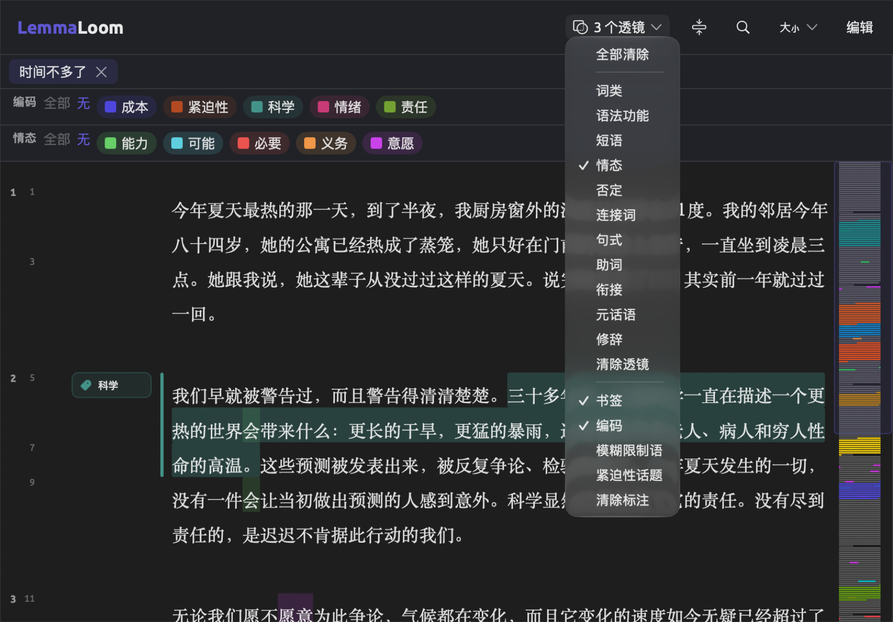
分析器是一种模块，在建立索引时为文档添加分析结果。LemmaLoom 内置了三个分析器。衔接追踪每个句子与前文的联系，元话语标注引导读者或听众的词语（如模糊限制语和增强语），修辞识别被动语态、排比等文体特征。你可以在窗口 ▸ 分析器中用 JavaScript 编写脚本，创建自己的分析器；自定义分析器在每个项目中都可以使用。分析器添加的结果可以显示为透镜，也可以用查询搜索。导入文档时，你可以选择运行哪些分析器；对于已有的文档，也可以在文档信息中运行或移除某个分析器。
查询搜索你的文档，按指定的条件返回包含所关注内容的结果。构建查询时，你在查询构建器中使用条件：有些条件规定搜索的内容（如词、句子、编码实例或文档），另一些条件则规定搜索的条件和结果的呈现形式（如列表、数量，要比较几组时则用比较）。根据搜索范围的不同，查询可以在窗口 ▸ 查询（跨项目）、项目或文档集的查询视图，或者检查器的多重模式标签页（单个文档）中构建。已存储的查询可以属于文档、文档集、项目或所有项目，并且可以用作透镜、智能文档集，甚至自定义分析器；此外，LemmaLoom 还可以根据查询自动编码。不过，并非一切都要从零开始构建：你可以使用一系列现成的查询，即模板，凡是能构建查询的地方，都可以在模板下找到它们，例如索引行、关键词和按属性统计编码实例。“气候辩论”项目中有两个已存储的查询：存储为透镜的“紧迫性话题”，以及属于文档集“行动派”的“关键词：行动派”。
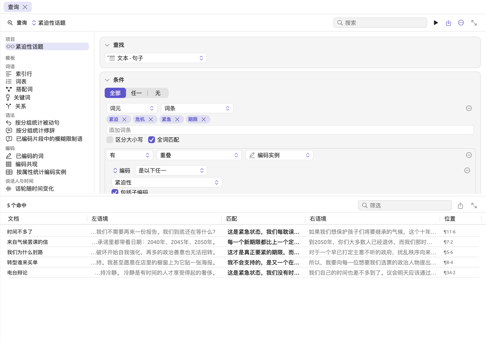
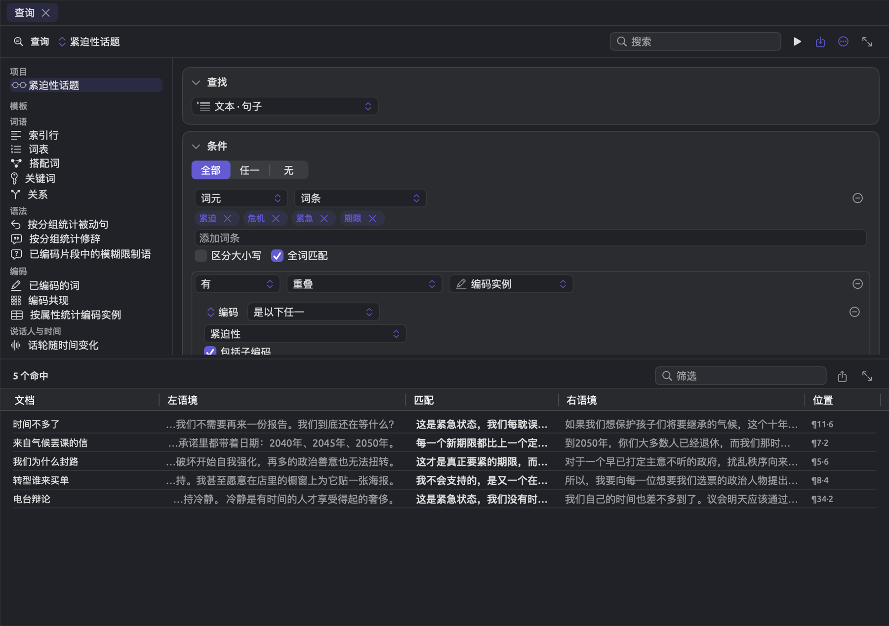
词典把词条归入有名称的类别，让你可以在文档中找到这些词，并按类别生成统计数据。任何词典也都可以显示为透镜。每个项目的词典保存在它的词典视图中；要把选中的文字作为词条加入词典，请使用选区栏中的添加到词典（在这里可以选择词典和类别）。例如，“气候辩论”项目有一个名为“模糊限制语”的词典，其中有两个类别：
| 类别 | 词条 |
|---|---|
| 近似语 | 大约、左右、大致、差不多、将近、几乎、或多或少 |
| 缓和语 | 我觉得、也许、或许、大概、似乎、恐怕、我猜、要我说、说不准 |
示例项目
本指南中的大多数示例、图示和截图都来自同一个项目“气候辩论”。这个虚构的数据集包含评论文章、专栏以及其他类型的文本，都是在一场关于气候变化的公开辩论中发表的。LemmaLoom 随附这个示例项目，你导入“气候辩论”后，就可以自己重现本指南中提到的每个步骤。选取文件 ▸ 导入 ▸ 示例项目，即可把“气候辩论”导入你的 LemmaLoom 资料库并设为当前项目，其中的文档已经建立好索引。
| 条目 | “气候辩论”中的内容 |
|---|---|
| 文档 | 共 15 个。其中 11 个是纯文本文档，包括评论文章、专栏、博客文章和一篇演讲，活动人士撰写的有“时间不多了”“来自气候罢课的信”“我们为什么封路”“农民不是敌人”“一位市长的承诺”和“希望要靠行动”，怀疑论者撰写的有“模型总是失准”“净零代价高昂”“不必恐慌”“转型谁来买单”和“科学从无定论”。“2024 热浪报告”，一份 PDF；“碳税之争”，一个网页；“电台辩论”，一段附有转写文本的音频录音；以及“时间不多了 (英语)”，“时间不多了”的英文译本 |
| 分组 | “纸媒”“网络” |
| 文档集 | “行动派”（活动人士撰写的六篇文本）、“怀疑派”（怀疑论者撰写的五篇文本） |
| 智能文档集 | “广泛传播”，条件为“读者数”至少为 100,000 |
| 标签 | “评论”“热门” |
| 属性 | “立场”“读者数”“发表日期”“媒体” |
| 编码 | “紧迫性”（子编码为“临界点”和“时间节点”）、“科学”（子编码为“不确定性”）、“成本”、“责任”和“情绪”（子编码为“恐惧”和“希望”）；“电台辩论”另有“说话人”（子编码为“主持人”“活动人士”和“怀疑论者”） |
| 编码集 | “论点” |
| 词典 | “模糊限制语”，类别为“近似语”和“缓和语” |
| 已存储的查询 | “紧迫性话题”（存储为透镜）、“关键词：行动派”（属于文档集“行动派”） |
本指南的结构
各章开头通常先讨论本章所依赖的概念，然后介绍操作步骤，最后是细节。如果你刚开始使用 LemmaLoom，可以先读快速入门，它会带你一次完成第一个项目。接下来是第 2 章“开始使用”。这一章介绍 LemmaLoom 的主窗口，以及 LemmaLoom 如何组织工作区，涉及项目、导入文档、编码等主题。从这里开始，你可以根据自己的兴趣自由选择要读的章节。例如，如果你的工作涉及大量编码，可以看看第 7 章“编码”和第 8 章“文档集、分组、标签和属性”。如果关注的是语法和词语计数，请接着阅读第 6 章“透镜”、第 11 章“语法检查器”以及有关查询的几章。
| 章节 | 内容 |
|---|---|
| 开始使用 | 第一次启动、主窗口、项目、导入、编码和第一次分析 |
| 项目与文档 | 项目、文档、导航栏、文档信息和跨项目工作 |
| 导入资料 | 文本文件、PDF、网页、录音和属性值 |
| 阅读与编辑 | 阅读器、查找和选择文本，以及编辑文档 |
| 透镜 | 每个透镜及其标注的内容 |
| 编码 | 编码、编码实例、备忘录、链接、书签和自动编码 |
| 文档集、分组、标签和属性 | 为分析划分项目 |
| 译文与分屏浏览 | 翻译文档，以及并排阅读两个文档 |
| 文本检查器 | 单个文档的计数、可读性和词汇指标 |
| 语法检查器 | 单个文档中的句子图示、搭配词和语篇 |
| 词汇速写 | 一个词的语法搭配对象及其评分方式 |
| 编码分析 | 编码实例的表格、矩阵和图表，以及共现指标 |
| 速写空间 | 按编码或属性值比较同一个词的搭配对象 |
| 构建查询 | 查询构建器、它的条件以及查询的存放位置 |
| 查询结果与统计 | 每种结果显示方式及其报告的统计量 |
| 查询模式与发现 | 语法模式，以及查找与已编码段落相似的段落 |
| 使用查询结果 | 把查询转换为透镜、分析器或智能文档集，以及对命中结果进行操作 |
| 词典 | 词条类别、匹配方式和词典透镜 |
| 自定义分析器 | 用 JavaScript 编写自己的分析器 |
| 分析与索引 | 建立索引为每种语言生成哪些结果，以及如何控制索引 |
| 交换与导出 | REFI-QDA 交换、LemmaLoom 归档和其他导出方式 |
| 撤销与重做 | 哪些操作可以撤销 |
| 设置与外观 | 主题、阅读器设置、透镜样式和界面语言 |
| 键盘快捷键 | 所有键盘快捷键 |
| 帮助与支持 | 术语表、反馈以及如何报告问题 |
| 统计量一览 | 所有统计量汇总在一张表中 |
体例约定
凡是以粗体显示的术语，无论是菜单名称、界面文字还是其他元素，如编码、词汇速写或自动编码…，都与 LemmaLoom 中显示的文字完全一致。如果你读的是本指南的德文版或中文版，这些术语分别对应德文界面或中文界面中的文字。
菜单命令采用路径表示法：菜单名称在前，后面是操作，中间用 ▸ 分隔。选取文件 ▸ 导入 ▸ 网页就是打开文件菜单，移到导入，然后选取网页。LemmaLoom 的应用程序菜单始终是 LemmaLoom，设置则位于 LemmaLoom ▸ 设置…。每当你点按名称以省略号（…）结尾的菜单项时，都会先打开一个对话框或窗口，让你在执行任何操作之前设置选项。
LemmaLoom 中的许多对象都有快捷菜单。根据你使用的输入设备，可以用辅助点按或按住 Control 键点按来打开快捷菜单。在导航栏中，文档的快捷菜单可以让你翻译文档、修改其信息，或者删除文档等。
以下是 macOS 在键盘快捷键中表示修饰键的符号：
| 符号 | 按键 |
|---|---|
| ⌘ | Command 键 |
| ⇧ | Shift 键 |
| ⌥ | Option 键 |
| ⌃ | Control 键 |
按 ⇧⌘C 的意思是按住 Shift 键和 Command 键，再按 C 键。凡是有快捷键的命令，后面都会在括号中给出快捷键，如文档 ▸ 编码（⇧⌘C）。键盘快捷键列表见第 25 章“键盘快捷键”。
斜体表示术语在此处定义，也用于直接引自所分析文档的词语，如气候和也许。需要原样输入的文字以等宽字体显示，文件名和扩展名（如 .qdpx）也是如此；“气候辩论”项目中的示例名称，如文档集“行动派”和编码“时间节点”，放在引号中。
如果控件已停用，说明它与当前情境无关，或者暂时不能使用。要了解窗口或对话框中某个按钮或选项为什么已停用，请将鼠标指针悬停在它上面。
系统要求
LemmaLoom 需要 macOS 26.6 或更高版本。
应用包含语法分析和使用 Whisper 模型转写所需的全部组件。默认模型 Apple 语音识别使用 macOS 的语音组件；如果你的 Mac 上尚未安装这些组件，LemmaLoom 会下载它们。翻译取决于 macOS 中已安装的翻译语言。第一次在两种语言之间翻译时，macOS 可能会提示你安装这两种语言。
支持的语言
界面语言
LemmaLoom 的界面语言可以是英语、德语或中国大陆简体中文，应用中的菜单、窗口和提示信息都会使用这种语言。默认情况下，LemmaLoom 会参照系统设置 ▸ 通用 ▸ 语言与地区中的首选语言顺序，使用这三种语言中排位最高的一种。如果语言与地区设置中这三种语言都没有列出，应用则使用英语。
LemmaLoom 也可以使用自己的界面语言，不受系统所选语言的影响：
- 选取 LemmaLoom ▸ 设置…（⌘,）。
- 点按通用。
- 在语言下的界面语言菜单中，选择 English、Deutsch 或简体中文。选择系统默认则恢复跟随 macOS。
- 点按退出 LemmaLoom，然后重新打开 LemmaLoom。
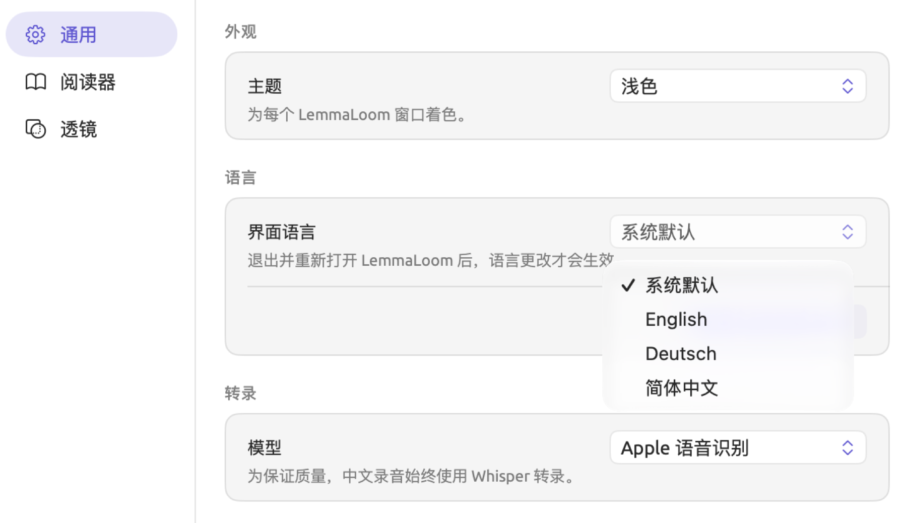

文档语言
导入文档对话框中有一个语言菜单，选择自动时，LemmaLoom 会自动判断文档的语言。你也可以手动设置为英语、德语或中文。你随时可以在文档信息中更改语言，更改后文档会按新语言重新建立索引。
对于支持的这三种语言，都会进行完整的语法分析，包括三个内置分析器。本章前文的分析工具介绍了语法分析。不过，有几个透镜取决于具体的语言：
| 透镜 | 英语 | 德语 | 中文 |
|---|---|---|---|
| 词类、语法功能、短语 | 是 | 是 | 是 |
| 情态、否定、连接词 | 是 | 是 | 是 |
| 衔接、元话语、修辞 | 是 | 是 | 是 |
| 形态学 | 是 | 是 | 否 |
| 句场 | 否 | 是 | 否 |
| 句式、助词 | 否 | 否 | 是 |
衔接、元话语和修辞透镜都依赖各自对应的分析器。只有当分析器在文档上运行过之后，它的透镜才会出现在透镜菜单中。如果你在导入时停用了某个分析器，或者之后在文档信息中移除了它，相应的透镜就会从透镜菜单中消失。
形态学透镜提供时态、数、级（big、bigger、biggest）和动词形式等语法标注。在德语中，它还会标注格、语气和性。由于汉语的词不会因这些语法特征而发生屈折变化，形态学透镜只适用于英语和德语文档。句场标注德语中动词的两个部分（左句框、右句框），还标注位于它们之前、之间和之后的场（前场、中场、后场），这些场统称为拓扑场。句式标注汉语中常见的句式（如“把”字句和“被”字句），助词则标注汉语中的体助词、结构助词和量词。
你也可以把其他语言的文档作为文本文档导入。这些文档可以阅读、搜索和编码，可以写备忘录，可以链接，也可以加书签。导航栏中每个文档旁边都会显示语言代码，例如 EN、DE 和 ZH。其他语言的代码旁会带一个问号。将鼠标指针悬停在问号上，会显示该语言不支持索引。这些文档无法使用任何依赖索引的功能，包括透镜菜单、语法标签页、词汇速写，以及关于词和句子的查询。不过，仍然可以对它们进行关于编码实例、备忘录或文档总体情况的查询。
录音是个例外。LemmaLoom 只能把语音转写为英语、德语或中文文本，具体取决于录音的前 30 秒与哪种语言最为匹配。转写出的中文文本一律使用简体字。详见第 4 章“导入资料”中的转录的工作方式。
要分析其他语言文档的语法，可以先翻译它。英语、德语或中文的译文与其他可建立索引的文档获得同等地位。为文档所在的文档集制作查询或词汇速写时，选择译文作为语料即可。